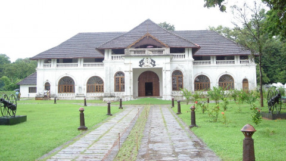
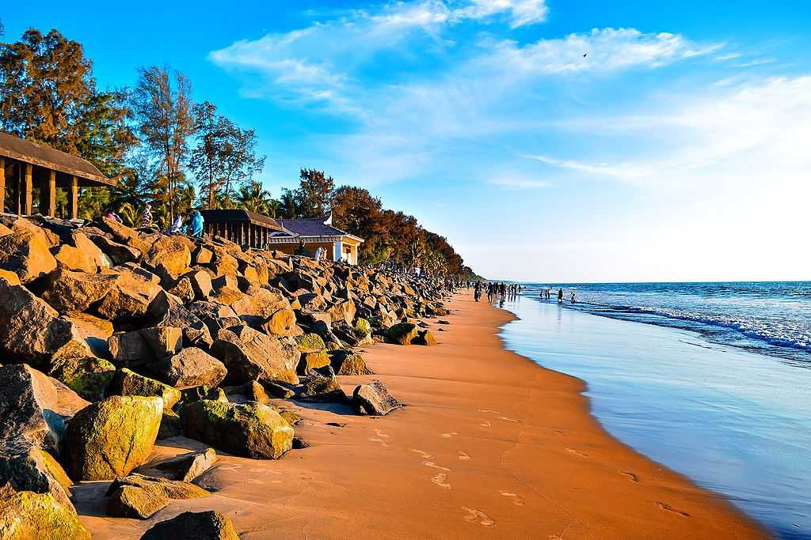
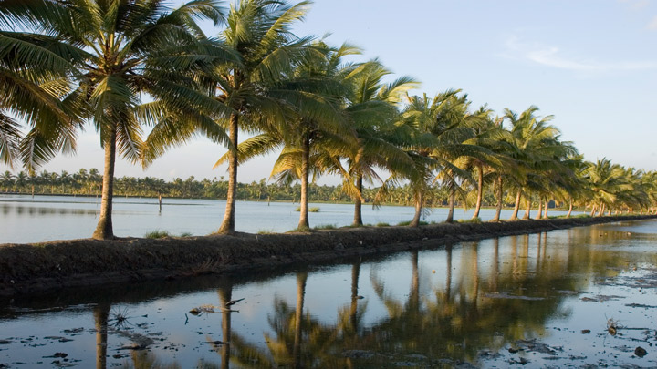

Sakthan Palace
Shakthan Thampuran Palace is situated in City of Thrissur in Kerala state, India. It is named as Vadakkekara Palace, was reconstructed in Kerala-Dutch style in 1795 by Ramavarma Thampuran of the erstwhile Princely State of Cochin, well as Sakthan Thampuran (Greatest ruler of the Cochin dynasty) is preserved by Archaeological Department.
The main structure of the Sakthan Thampuran Palace has a two-storeyed building and a traditional Kerala style Nālukettu. High roofs, extra thick walls, spacious rooms and floors paved with finely smoothened Italian marbles are some of the structural specialities of this palace. The interiors of the palace, because of its unique construction offer comfortable and pleasant staying conditions irrespective of the prevailing weather conditions.
How to Get Here
The nearest airport is at Cochin International airport, Nedumbasserry, 58 kms from Thrissur.The nearest railhead is Thrissur Railway Station (4kms).Thrissur can be accessed by road through the neighbouring Districts of Ernakulam (Cochin), Palakkad and Malappuram. National High Way 47 passes nearby and passes through Mannuthy, 6 km away from Thrissur city. Many private buses and KSRTC buses plying on this route.
Vadakkunnathan Temple

The Vadakkumnathan Temple is among the oldest and most pristine structures in God’s Own Country. It was allegedly built by Lord Parasurama who, according to legends, reclaimed Kerala from the sea. The traditional Kerala style of architecture, carvings and murals depicting scenes from the famous epic Mahabharata, along with many other ancient art relics, make it a must visit site for historians and archaeologists alike.
Step in and you are immediately made aware of the rich tradition of the temple, carefully preserved in its walls to this very day. The temple is also the venue for the annual pooram festival, Thrissur Pooram, in April-May is popular for its cultural value, caparisoned elephants and magnificent fireworks display.
How to Get Here
Nearest railway station: Thrissur, about 1.5 km away
Nearest airport: Cochin International Airport, about 47 km away
Snehatheeram Beach
The stunning Thalikulam Snehatheeram Beach is located about 25 km or 1 hour ride from Thrissur and is loved for its natural ambience and wonderful visuals of the coast. It is one of the best maintained beaches in Kerala. The sunsets are especially lovely and people flock here in large numbers to enjoy the view. Children throng to the nearby park and occasionally there are musical performances at the nearby stage. It has a welcoming vibe at all times and is a highly recommended tourist spot in the area.
How to Get Here
Nearest railway station: Thrissur, about 16 km away
Nearest airport: Cochin International Airport, about 46 km away
Chettuva Backwater
Chettuva has done Thrissur proud on many occasions, with the visuals on offer here being regularly seen in regional feature films. Dotted with mangrove vegetation and islets, its tranquil and peaceful vibe makes it possible for artists to go about their craft in an absolute seclusion and solitude. Its trails have opened up with each shooting, as filmmakers have found newer spots in and around the area on each visit.
How to Get Here
Nearest railway station: Guruvayoor, about 8 km, is the nearest railway station.
Nearest airport: Cochin International Airport, about 58 km from Thrissur and about 76 km from Chettuva, is the nearest airport.